インプラントならアイデンタルクリニック トップページ > 概要・アクセス > 新宿医院の紹介
新宿駅から徒歩２分と、ご来院の際はとても便利です。
ＪＲ（山手線、中央線、総武線）、小田急線、京王線、地下鉄（丸の内線、大江戸線、副都心線、都営新宿線）など各方面からのご来院の際も、とても便利です。
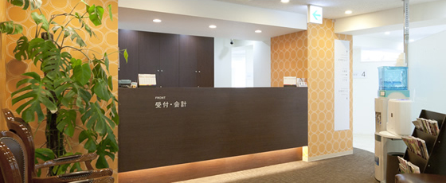
|
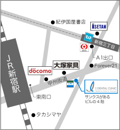 |
新宿医院：医院長 山田 博司
|
いつも明るく清潔なクリニックであることを心がけています
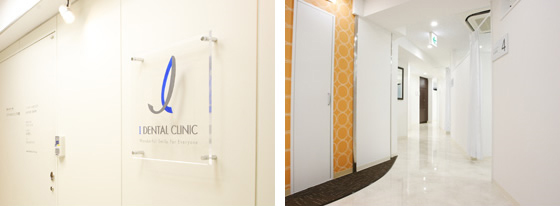
歯科専用ＣＴ（コンピューター活断撮影器）など充実した設備機器を完備しています
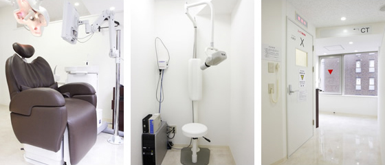
東京メトロ各線 新宿三丁目駅をご利用の患者様
| 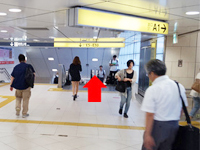 | 東京メトロ丸ノ内線、副都心線、都営新幹線「新宿三丁目」駅よりE5出口方面へ地下通路を進んでください。 |
|---|---|
| 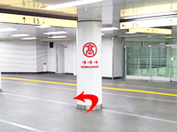 | 地下通路を案内に従いE5出口に向かい左に曲がります。 |
| 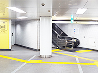 | E5には、壁際にエスカレーターと階段、左側にエレベーターがございます。ご利用のうえ、地上出口にむかってください。 |
| 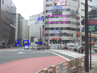 | E5出口を出ますと甲州街道と明治通りが交差する、「新宿４丁目」の大きな交差点が見えます。甲州街道を渡り目線を少し上にずらすと、正面に大きなテレビジョンがついているビルが見えると思います。 |
ＪＲをご利用の患者様
| 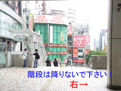 | 東南口改札を出ると、目の前が階段になっていますが、階段は下りずに、右に曲がって下さい。５ｍほどすると正面に大きな通り（甲州街道）があります。 |
|---|---|
甲州街道をガードレール沿いに左に曲がって下さい。緩やかな下り坂になっています。 |
|
| 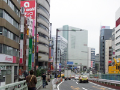 | 50m程進むと左手に「ドコモショップ」さんが見えてきます。 |
更に直進し、坂を下り切った所の正面左手に「IDC大塚家具」さんがあります。 |
|
| 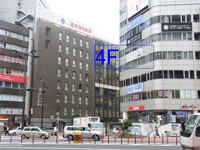 | その交差点を右「トヨタ」さんの方へ横断し、正面の角（１Fサンクス）のビル４Fが当院です。目線を上に向けると、大きなテレビジョンや「インプラント」の看板がみえますので目印にして下さい。 |